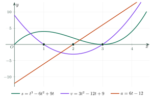

The Second DerivativeĐạo hàm cấp hai
Grade 11 · Topic: DerivativesLớp 11 · Chủ đề: Đạo hàm
1Lesson IntroductionGiới thiệu bài học
Learning goalsMục tiêu bài học
By the end of this lesson you can:
Sau bài học này, em có thể:
define and compute the second derivative \(f''\);
hiểu và tính được đạo hàm cấp hai \(f''\);
interpret \(s''(t)\) as instantaneous acceleration;
hiểu \(s''(t)\) là gia tốc tức thời của chuyển động;
solve motion problems: when the velocity or acceleration is zero, speeding up or slowing down;
giải bài toán chuyển động: khi nào vận tốc, gia tốc bằng 0; vật nhanh dần hay chậm dần;
compute some higher-order derivatives.
tính một số đạo hàm cấp cao đơn giản.
2Mathematical VocabularyTừ vựng Toán học
second derivative – the derivative of \(f'\), written \(f''\) or \(y''\).
đạo hàm cấp hai – đạo hàm của \(f'\), kí hiệu \(f''\) hay \(y''\).
instantaneous acceleration – \(a(t)=v'(t)=s''(t)\).
gia tốc tức thời – \(a(t)=v'(t)=s''(t)\).
higher-order derivative – the derivative of order \(n\): \(f^{(n)}=\left(f^{(n-1)}\right)'\).
đạo hàm cấp cao – đạo hàm cấp \(n\): \(f^{(n)}=\left(f^{(n-1)}\right)'\).
3Useful English PhrasesCụm từ tiếng Anh thường gặp
Differentiate twice.
Lấy đạo hàm hai lần.
Acceleration is the derivative of velocity.
Gia tốc là đạo hàm của vận tốc.
The object stops when the velocity is zero.
Vật dừng lại khi vận tốc bằng 0.
The car is slowing down.
Xe đang chuyển động chậm dần.
The second derivative of sine is minus sine.
Đạo hàm cấp hai của sin là trừ sin.
4Prerequisite ReviewÔn tập kiến thức nền
From Bài 31–32: \(v(t)=s'(t)\); \((x^n)'=nx^{n-1}\), \((\sin u)'=u'\cos u\), \((e^u)'=u'e^u\), \((\ln u)'=\dfrac{u'}{u}\), product and quotient rules.
Từ Bài 31–32: \(v(t)=s'(t)\); \((x^n)'=nx^{n-1}\), \((\sin u)'=u'\cos u\), \((e^u)'=u'e^u\), \((\ln u)'=\dfrac{u'}{u}\), quy tắc tích, thương.
5TheoryLý thuyết
5.1 DefinitionĐịnh nghĩa
Second derivativeĐạo hàm cấp hai
If \(y=f(x)\) has a derivative \(y'=f'(x)\) on \((a;b)\) and \(f'\) also has a derivative there, then \((f')'\) is the second derivative: \(y''=f''(x)=(f'(x))'\). Similarly \(f‴=(f'')'\), \(f^{(n)}=\left(f^{(n-1)}\right)'\).
Giả sử \(y=f(x)\) có đạo hàm \(y'=f'(x)\) trên \((a;b)\) và \(f'\) cũng có đạo hàm trên khoảng đó. Khi đó \((f')'\) gọi là đạo hàm cấp hai của \(f\): \(y''=f''(x)=(f'(x))'\). Tương tự \(f‴=(f'')'\), đạo hàm cấp cao cấp \(n\): \(f^{(n)}=\left(f^{(n-1)}\right)'\).
ExamplesVí dụ nhanh
\(y=x^4\): \(y'=4x^3\), \(y''=12x^2\), \(y‴=24x\), \(y^{(4)}=24\), \(y^{(5)}=0\).
\(y=x^4\): \(y'=4x^3\), \(y''=12x^2\), \(y‴=24x\), \(y^{(4)}=24\), \(y^{(5)}=0\).
\(y=\sin x\): \(y'=\cos x\), \(y''=-\sin x\) (so \(y''+y=0\)).
\(y=\sin x\): \(y'=\cos x\), \(y''=-\sin x\) (nên \(y''+y=0\)).
\(y=e^{kx}\): \(y''=k^2e^{kx}\); \(y=\ln x\): \(y''=-\dfrac1{x^2}\).
\(y=e^{kx}\): \(y''=k^2e^{kx}\); \(y=\ln x\): \(y''=-\dfrac1{x^2}\).
5.2 Mechanical meaningÝ nghĩa cơ học
AccelerationGia tốc tức thời
For a motion \(s=s(t)\): velocity \(v(t)=s'(t)\), acceleration \(a(t)=v'(t)=s''(t)\). If \(v\) and \(a\) have the same sign the object speeds up; opposite signs: it slows down.
Với chuyển động \(s=s(t)\): vận tốc \(v(t)=s'(t)\), gia tốc tức thời \(a(t)=v'(t)=s''(t)\). Nếu \(v\) và \(a\) cùng dấu thì vật chuyển động nhanh dần; trái dấu thì chậm dần.

Watch out!Lưu ý
\(a=0\) does not mean the object is at rest: at \(t=2\) above, \(v=-3\) m/s. "At rest" means \(v=0\).
\(a=0\) không có nghĩa là vật đứng yên: ở hình trên, tại \(t=2\) thì \(v=-3\) m/s. Vật dừng khi \(v=0\).
6Worked ExamplesVí dụ có lời giải
ExampleVí dụ 1BasicCơ bản – Computing \(f''\)Tính đạo hàm cấp hai
Find \(f''(x)\) and \(f''(1)\) for \(f(x)=x^3-3x^2+4x-5\).
Tính \(f''(x)\) và \(f''(1)\) với \(f(x)=x^3-3x^2+4x-5\).
Analysis: Differentiate twice.
Phân tích: Lấy đạo hàm hai lần.
\(f'(x)=3x^2-6x+4\).
\(f'(x)=3x^2-6x+4\).
\(f''(x)=6x-6\), \(f''(1)=0\).
\(f''(x)=6x-6\), \(f''(1)=0\).
\(f''(x)=6x-6\); \(f''(1)=0\).
\(f''(x)=6x-6\); \(f''(1)=0\).
ExampleVí dụ 2BasicCơ bản – Trigonometric and exponentialHàm lượng giác và hàm mũ
Find \(y''\) for
(a) \(y=\cos 2x\);
(b) \(y=xe^x\).
Tính \(y''\):
a) \(y=\cos 2x\);
b) \(y=xe^x\).
Analysis: Chain rule; product rule.
Phân tích: Hàm hợp; quy tắc tích.
(a) \(y'=-2\sin 2x\), \(y''=-4\cos 2x\).
a) \(y'=-2\sin 2x\), \(y''=-4\cos 2x\).
(b) \(y'=e^x+xe^x=(x+1)e^x\), \(y''=e^x+(x+1)e^x=(x+2)e^x\).
b) \(y'=e^x+xe^x=(x+1)e^x\), \(y''=e^x+(x+1)e^x=(x+2)e^x\).
\(-4\cos 2x\); \((x+2)e^x\).
\(-4\cos 2x\); \((x+2)e^x\).
ExampleVí dụ 3IntermediateTrung bình – Motion of an objectChuyển động của một vật
An object moves with \(s(t)=t^3-6t^2+9t\) (m, s), \(0\le t\le4{,}5\).
(a) Find the velocity and the acceleration at \(t=2\).
(b) When is the object at rest?
(c) When is it slowing down?
Một vật chuyển động theo \(s(t)=t^3-6t^2+9t\) (m, s), \(0\le t\le4{,}5\).
a) Tính vận tốc, gia tốc tại \(t=2\).
b) Khi nào vật dừng lại?
c) Trong khoảng nào vật chuyển động chậm dần?
Analysis: \(v=3t^2-12t+9\), \(a=6t-12\).
Phân tích: \(v=3t^2-12t+9\), \(a=6t-12\).
(a) \(v(2)=-3\) m/s, \(a(2)=0\).
a) \(v(2)=-3\) m/s, \(a(2)=0\).
(b) \(v=0\iff t=1\) or \(t=3\).
b) \(v=0\iff t=1\) hoặc \(t=3\).
(c) Slowing down when \(v\), \(a\) have opposite signs: \(0\lt t\lt 1\) (\(v>0\), \(a\lt 0\)) and \(2\lt t\lt 3\) (\(v\lt 0\), \(a>0\)).
c) Chậm dần khi \(v\), \(a\) trái dấu: \(0\lt t\lt 1\) (\(v>0\), \(a\lt 0\)) và \(2\lt t\lt 3\) (\(v\lt 0\), \(a>0\)).
(a) \(-3\) m/s, \(0\);
(b) \(t=1\), \(t=3\);
(c) \((0;1)\) and \((2;3)\).
a) \(-3\) m/s, \(0\);
b) \(t=1\), \(t=3\);
c) \((0;1)\) và \((2;3)\).
ExampleVí dụ 4IntermediateTrung bình – Braking carÔ tô phanh gấp
After braking, a car travels \(s(t)=20t-2{,}5t^2\) (m). Find its acceleration and the time and distance until it stops.
Sau khi đạp phanh, ô tô đi được quãng đường \(s(t)=20t-2{,}5t^2\) (m). Tính gia tốc của xe, thời gian và quãng đường từ lúc phanh đến khi dừng.
Analysis: Stop: \(v=0\).
Phân tích: Xe dừng khi \(v=0\).
\(v=20-5t\), \(a=-5\) m/s² (constant, opposite to \(v\)).
\(v=20-5t\), \(a=-5\) m/s² (không đổi, ngược dấu với \(v\): chậm dần đều).
\(v=0\Rightarrow t=4\) s; \(s(4)=80-40=40\) m.
\(v=0\Rightarrow t=4\) s; \(s(4)=80-40=40\) m.
\(a=-5\) m/s²; 4 s; 40 m.
\(a=-5\) m/s²; 4 giây; 40 m.
ExampleVí dụ 5AdvancedNâng cao – Spring oscillationDao động của lò xo
A mass on a spring moves with \(x(t)=4\cos(\pi t)\) (cm, s). Show that \(x''=-\pi^2x\) and find the acceleration at \(t=\dfrac13\).
Một vật gắn lò xo dao động theo \(x(t)=4\cos(\pi t)\) (cm, s). Chứng minh \(x''=-\pi^2x\) và tính gia tốc tại \(t=\dfrac13\).
Analysis: Differentiate twice.
Phân tích: Lấy đạo hàm hai lần.
\(x'=-4\pi\sin(\pi t)\), \(x''=-4\pi^2\cos(\pi t)=-\pi^2x\).
\(x'=-4\pi\sin(\pi t)\), \(x''=-4\pi^2\cos(\pi t)=-\pi^2x\).
\(a\left(\dfrac13\right)=-4\pi^2\cdot\dfrac12=-2\pi^2\approx-19{,}7\) cm/s².
\(a\left(\dfrac13\right)=-4\pi^2\cdot\dfrac12=-2\pi^2\approx-19{,}7\) cm/s².
\(-2\pi^2\) cm/s² (always pointing towards the equilibrium).
\(-2\pi^2\) cm/s² (gia tốc luôn hướng về vị trí cân bằng).
7PracticeBài tập luyện tập
A. Multiple ChoiceA. Trắc nghiệm nhiều lựa chọn
For \(f(x)=x^3-3x^2+2x+1\), \(f''(2)=\)…
Cho \(f(x)=x^3-3x^2+2x+1\). Khi đó \(f''(2)=\)…
Answer: a. Twice.
Đáp án a. \(f'(x)=3x^2-6x+2\), \(f''(x)=6x-6\).
For \(y=\sin 2x\)…
Đạo hàm cấp hai của \(y=\sin 2x\) là…
Answer: c. Chain rule twice.
Đáp án c. Mỗi lần lấy đạo hàm nhân thêm \(2\).
An object moves with \(s(t)=t^3-6t^2+5t\) (m, s). The acceleration at \(t=3\) is…
Một vật chuyển động theo \(s(t)=t^3-6t^2+5t\) (m, s). Gia tốc tại \(t=3\) là…
Answer: d. \(a=s''\).
Đáp án d. \(v=3t^2-12t+5\), \(a=6t-12\).
B. True or FalseB. Đúng hoặc sai
\(y=\sin x\) satisfies \(y''+y=0\).
Hàm số \(y=\sin x\) thỏa mãn \(y''+y=0\).
Compute directly.
Tính trực tiếp đạo hàm cấp hai.
If the acceleration is zero, the object is at rest.
Nếu gia tốc bằng 0 thì vật đứng yên.
Velocity vs acceleration.
Phân biệt vận tốc và gia tốc.
C. Short AnswerC. Trả lời ngắn
After braking a car travels \(s(t)=20t-2 t^2\) (m). How many metres does it travel before stopping?
Sau khi phanh, ô tô đi được \(s(t)=20t-2\,t^2\) (m). Ô tô đi thêm bao nhiêu mét thì dừng hẳn?
Enter a number.
Nhập một số.
\(v=0\).
\(v=20-4t=0\Rightarrow t=5\); thay vào \(s(t)\).
\(f(x)=x^4\). Find \(f‴(2)\).
Cho \(f(x)=x^4\). Tính đạo hàm cấp ba \(f‴(2)\).
Enter a number.
Nhập một số.
Three times.
\(f‴(x)=4\cdot3\cdot2\,x^{1}\).
A. Multiple ChoiceA. Trắc nghiệm nhiều lựa chọn
For \(f(x)=2x^3+x^2-4x+1\), \(f''(-1)=\)…
Cho \(f(x)=2x^3+x^2-4x+1\). Khi đó \(f''(-1)=\)…
Answer: c. Twice.
Đáp án c. \(f'(x)=6x^2+2x-4\), \(f''(x)=12x+2\).
For \(y=e^{-3x}\)…
Đạo hàm cấp hai của \(y=e^{-3x}\) là…
Answer: b. Chain rule twice.
Đáp án b. Mỗi lần lấy đạo hàm nhân thêm \(-3\).
An object moves with \(s(t)=t^3-9t^2+10t\) (m, s). The acceleration at \(t=2\) is…
Một vật chuyển động theo \(s(t)=t^3-9t^2+10t\) (m, s). Gia tốc tại \(t=2\) là…
Answer: a. \(a=s''\).
Đáp án a. \(v=3t^2-18t+10\), \(a=6t-18\).
B. True or FalseB. Đúng hoặc sai
The second derivative of a quadratic function is a constant.
Đạo hàm cấp hai của hàm số bậc hai là một hằng số.
Compute directly.
Tính trực tiếp đạo hàm cấp hai.
If \(v\gt0\) and \(a\lt0\), the object is speeding up.
Nếu \(v\gt0\) và \(a\lt0\) thì vật chuyển động nhanh dần.
Velocity vs acceleration.
Phân biệt vận tốc và gia tốc.
C. Short AnswerC. Trả lời ngắn
After braking a car travels \(s(t)=30t-3 t^2\) (m). How many metres does it travel before stopping?
Sau khi phanh, ô tô đi được \(s(t)=30t-3\,t^2\) (m). Ô tô đi thêm bao nhiêu mét thì dừng hẳn?
Enter a number.
Nhập một số.
\(v=0\).
\(v=30-6t=0\Rightarrow t=5\); thay vào \(s(t)\).
\(f(x)=x^5\). Find \(f‴(1)\).
Cho \(f(x)=x^5\). Tính đạo hàm cấp ba \(f‴(1)\).
Enter a number.
Nhập một số.
Three times.
\(f‴(x)=5\cdot4\cdot3\,x^{2}\).
A. Multiple ChoiceA. Trắc nghiệm nhiều lựa chọn
For \(f(x)=-x^3+4x^2+3x+1\), \(f''(1)=\)…
Cho \(f(x)=-x^3+4x^2+3x+1\). Khi đó \(f''(1)=\)…
Answer: a. Twice.
Đáp án a. \(f'(x)=-3x^2+8x+3\), \(f''(x)=-6x+8\).
For \(y=\sin 3x\)…
Đạo hàm cấp hai của \(y=\sin 3x\) là…
Answer: c. Chain rule twice.
Đáp án c. Mỗi lần lấy đạo hàm nhân thêm \(3\).
An object moves with \(s(t)=t^3-3t^2+7t\) (m, s). The acceleration at \(t=4\) is…
Một vật chuyển động theo \(s(t)=t^3-3t^2+7t\) (m, s). Gia tốc tại \(t=4\) là…
Answer: a. \(a=s''\).
Đáp án a. \(v=3t^2-6t+7\), \(a=6t-6\).
B. True or FalseB. Đúng hoặc sai
\((x^5)^{(5)}=120\).
Đạo hàm cấp năm của \(x^5\) bằng 120.
Compute directly.
Tính trực tiếp đạo hàm cấp hai.
\(\left(\ln x\right)''=\dfrac1{x^2}\) for \(x\gt0\).
\(\left(\ln x\right)''=\dfrac1{x^2}\) với \(x\gt0\).
Velocity vs acceleration.
Phân biệt vận tốc và gia tốc.
C. Short AnswerC. Trả lời ngắn
After braking a car travels \(s(t)=24t-4 t^2\) (m). How many metres does it travel before stopping?
Sau khi phanh, ô tô đi được \(s(t)=24t-4\,t^2\) (m). Ô tô đi thêm bao nhiêu mét thì dừng hẳn?
Enter a number.
Nhập một số.
\(v=0\).
\(v=24-8t=0\Rightarrow t=3\); thay vào \(s(t)\).
\(f(x)=x^4\). Find \(f‴(3)\).
Cho \(f(x)=x^4\). Tính đạo hàm cấp ba \(f‴(3)\).
Enter a number.
Nhập một số.
Three times.
\(f‴(x)=4\cdot3\cdot2\,x^{1}\).
D. Self-practice: Multiple ChoiceD. Tự luyện: trắc nghiệm
For \(f(x)=x^3-2x^2+3x+2\), \(f''(0)=\)…
Cho \(f(x)=x^3-2x^2+3x+2\). Khi đó \(f''(0)=\)…
Answer: d. Differentiate twice.
Đáp án d. \(f'(x)=3x^2-4x+3\), \(f''(x)=6x-4\).
\(s(t)=t^3-9t^2+4t\) (m, s). The acceleration at \(t=3\) is… (m/s²)
Một vật chuyển động theo phương trình \(s(t)=t^3-9t^2+4t\) (\(s\): mét, \(t\): giây). Gia tốc tại \(t=3\) là… (m/s²)
Answer: b. \(a(t)=s''(t)\).
Đáp án b. \(v(t)=3t^2-18t+4\), \(a(t)=6t-18\).
For \(y=\cos 4x\), \(y''=\)…
Cho \(y=\cos 4x\). Khi đó…
Answer: d. \(y''=-4^2y\).
Đáp án d. Đạo hàm hai lần, mỗi lần nhân thêm \(4\): \(y''=-16\,y\).
For \(y=e^{3x}\), \(y''=\)…
Cho \(y=e^{3x}\). Khi đó…
Answer: d. Each derivative multiplies by \(3\).
Đáp án d. Mỗi lần lấy đạo hàm nhân thêm \(3\).
\((x^4)''=\)…
Đạo hàm cấp hai của \(y=x^4\) là…
Answer: b. \(n(n-1)x^{n-2}\).
Đáp án b. \((x^n)''=n(n-1)x^{n-2}\).
For \(f(x)=x^3-6x^2+x+1\), the equation \(f''(x)=0\) has the solution…
Cho \(f(x)=x^3-6x^2+x+1\). Phương trình \(f''(x)=0\) có nghiệm là…
Answer: c. \(f''(x)=6x-12\).
Đáp án c. \(f''(x)=6x-12=0\).
For \(y=\ln(5x)\) (\(x\gt 0\)), \(y''=\)…
Cho \(y=\ln(5x)\) với \(x\gt 0\). Khi đó \(y''=\)…
Answer: b. \(y'=\dfrac1x\).
Đáp án b. \(y'=\dfrac{5}{5x}=\dfrac1x\), \(y''=-\dfrac1{x^2}\).
\(s(t)=t^3-9t^2+51t\). At which time is the acceleration zero?
Một vật chuyển động theo \(s(t)=t^3-9t^2+51t\) (\(t\) giây). Gia tốc bằng 0 tại thời điểm…
Answer: a. \(a(t)=6t-18=0\).
Đáp án a. \(a(t)=s''(t)=6t-18=0\).
D. Self-practice: Multiple ChoiceD. Tự luyện: trắc nghiệm
For \(f(x)=3x^3+x^2+5x+1\), \(f''(1)=\)…
Cho \(f(x)=3x^3+x^2+5x+1\). Khi đó \(f''(1)=\)…
Answer: c. Differentiate twice.
Đáp án c. \(f'(x)=9x^2+2x+5\), \(f''(x)=18x+2\).
\(s(t)=t^3-3t^2+7t\) (m, s). The acceleration at \(t=4\) is… (m/s²)
Một vật chuyển động theo phương trình \(s(t)=t^3-3t^2+7t\) (\(s\): mét, \(t\): giây). Gia tốc tại \(t=4\) là… (m/s²)
Answer: c. \(a(t)=s''(t)\).
Đáp án c. \(v(t)=3t^2-6t+7\), \(a(t)=6t-6\).
For \(y=\sin 3x\), \(y''=\)…
Cho \(y=\sin 3x\). Khi đó…
Answer: b. \(y''=-3^2y\).
Đáp án b. Đạo hàm hai lần, mỗi lần nhân thêm \(3\): \(y''=-9\,y\).
For \(y=e^{5x}\), \(y''=\)…
Cho \(y=e^{5x}\). Khi đó…
Answer: b. Each derivative multiplies by \(5\).
Đáp án b. Mỗi lần lấy đạo hàm nhân thêm \(5\).
\((x^6)''=\)…
Đạo hàm cấp hai của \(y=x^6\) là…
Answer: b. \(n(n-1)x^{n-2}\).
Đáp án b. \((x^n)''=n(n-1)x^{n-2}\).
For \(f(x)=x^3-3x^2-2x+1\), the equation \(f''(x)=0\) has the solution…
Cho \(f(x)=x^3-3x^2-2x+1\). Phương trình \(f''(x)=0\) có nghiệm là…
Answer: a. \(f''(x)=6x-6\).
Đáp án a. \(f''(x)=6x-6=0\).
For \(y=\ln(4x)\) (\(x\gt 0\)), \(y''=\)…
Cho \(y=\ln(4x)\) với \(x\gt 0\). Khi đó \(y''=\)…
Answer: d. \(y'=\dfrac1x\).
Đáp án d. \(y'=\dfrac{4}{4x}=\dfrac1x\), \(y''=-\dfrac1{x^2}\).
\(s(t)=t^3-9t^2+30t\). At which time is the acceleration zero?
Một vật chuyển động theo \(s(t)=t^3-9t^2+30t\) (\(t\) giây). Gia tốc bằng 0 tại thời điểm…
Answer: c. \(a(t)=6t-18=0\).
Đáp án c. \(a(t)=s''(t)=6t-18=0\).
D. Self-practice: Multiple ChoiceD. Tự luyện: trắc nghiệm
For \(f(x)=-3x^3-2x^2-2x+4\), \(f''(-2)=\)…
Cho \(f(x)=-3x^3-2x^2-2x+4\). Khi đó \(f''(-2)=\)…
Answer: a. Differentiate twice.
Đáp án a. \(f'(x)=-9x^2-4x-2\), \(f''(x)=-18x-4\).
\(s(t)=t^3-9t^2+2t\) (m, s). The acceleration at \(t=3\) is… (m/s²)
Một vật chuyển động theo phương trình \(s(t)=t^3-9t^2+2t\) (\(s\): mét, \(t\): giây). Gia tốc tại \(t=3\) là… (m/s²)
Answer: d. \(a(t)=s''(t)\).
Đáp án d. \(v(t)=3t^2-18t+2\), \(a(t)=6t-18\).
For \(y=\sin 5x\), \(y''=\)…
Cho \(y=\sin 5x\). Khi đó…
Answer: b. \(y''=-5^2y\).
Đáp án b. Đạo hàm hai lần, mỗi lần nhân thêm \(5\): \(y''=-25\,y\).
For \(y=e^{4x}\), \(y''=\)…
Cho \(y=e^{4x}\). Khi đó…
Answer: d. Each derivative multiplies by \(4\).
Đáp án d. Mỗi lần lấy đạo hàm nhân thêm \(4\).
\((x^5)''=\)…
Đạo hàm cấp hai của \(y=x^5\) là…
Answer: c. \(n(n-1)x^{n-2}\).
Đáp án c. \((x^n)''=n(n-1)x^{n-2}\).
For \(f(x)=x^3-3x^2-x+1\), the equation \(f''(x)=0\) has the solution…
Cho \(f(x)=x^3-3x^2-x+1\). Phương trình \(f''(x)=0\) có nghiệm là…
Answer: d. \(f''(x)=6x-6\).
Đáp án d. \(f''(x)=6x-6=0\).
For \(y=\ln(3x)\) (\(x\gt 0\)), \(y''=\)…
Cho \(y=\ln(3x)\) với \(x\gt 0\). Khi đó \(y''=\)…
Answer: d. \(y'=\dfrac1x\).
Đáp án d. \(y'=\dfrac{3}{3x}=\dfrac1x\), \(y''=-\dfrac1{x^2}\).
\(s(t)=t^3-6t^2+55t\). At which time is the acceleration zero?
Một vật chuyển động theo \(s(t)=t^3-6t^2+55t\) (\(t\) giây). Gia tốc bằng 0 tại thời điểm…
Answer: c. \(a(t)=6t-12=0\).
Đáp án c. \(a(t)=s''(t)=6t-12=0\).
8Common MistakesLỗi thường gặp
Taking \(f''=(f)^2\) or \(f'\cdot f'\). \(f''\) means differentiating \(f'\) again.
Hiểu \(f''\) là \((f')^2\). \(f''\) là đạo hàm của \(f'\).
Confusing velocity and acceleration. \(v=s'\), \(a=s''\).
Nhầm vận tốc với gia tốc. \(v=s'\), \(a=s''\).
"\(a=0\) so the object stops". The object stops when \(v=0\).
"\(a=0\) nên vật dừng". Vật dừng khi \(v=0\).
Losing the factor \(k\) twice. \((\sin kx)''=-k^2\sin kx\).
Quên nhân \(k\) ở lần lấy đạo hàm thứ hai. \((\sin kx)''=-k^2\sin kx\).
9Lesson SummaryTổng kết
\(f''=(f')'\); \(f^{(n)}=\left(f^{(n-1)}\right)'\).
\(f''=(f')'\); \(f^{(n)}=\left(f^{(n-1)}\right)'\).
\(a(t)=v'(t)=s''(t)\); same signs: speeding up, opposite signs: slowing down.
\(a(t)=v'(t)=s''(t)\); \(v\), \(a\) cùng dấu: nhanh dần; trái dấu: chậm dần.
\((\sin kx)''=-k^2\sin kx\), \((e^{kx})''=k^2e^{kx}\), \((\ln x)''=-\dfrac1{x^2}\).
\((\sin kx)''=-k^2\sin kx\), \((e^{kx})''=k^2e^{kx}\), \((\ln x)''=-\dfrac1{x^2}\).
Key words: second derivative, acceleration, speeding up, slowing down.
Từ cần nhớ: second derivative, acceleration, speeding up, slowing down.